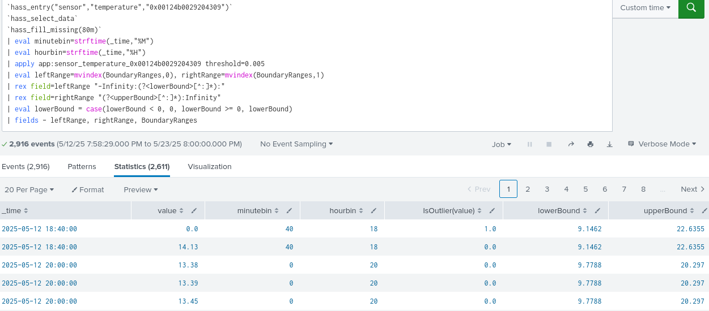
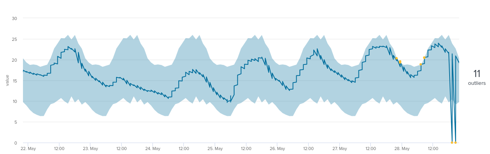
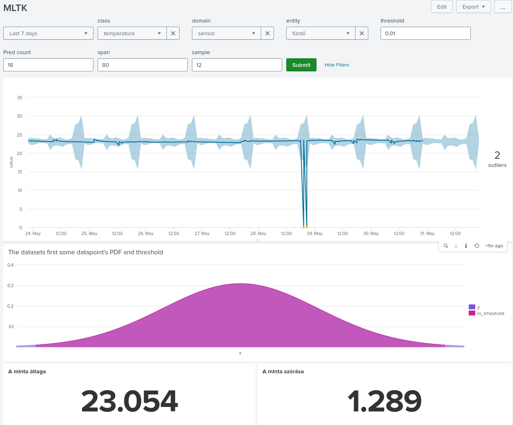

A probléma

Előfeltélek
Folytonosság
`hass_entry("sensor","temperature","0x00124b0029204309")`
`hass_select_data`
| bin span=1m _time
| where value!="unavailable"
| stats count by _time, value
| makecontinuous _time span=1m
| _time | value | count |
| 2025-05-12 19:58 | 0 | 1 |
| 2025-05-12 19:59 | 14.13 | 1 |
| 2025-05-12 20:00 | 14.01 | 1 |
| 2025-05-12 20:01 | ||
| 2025-05-12 20:02 | ||
| 2025-05-12 20:03 | ||
| 2025-05-12 20:04 | ||
| 2025-05-12 20:05 | ||
| 2025-05-12 20:06 | 13.89 | 1 |
| 2025-05-12 20:07 |

Lehetséges megoldások
A fájl

Támogatott eloszlások
Elsőnek elemezzük ki ezt a részt:

Most csak a normális eloszlással foglalkozunk.
codecs_manager.add_codec(
'algos_support.density_function.normal_distribution',
'NormalDistribution',
SimpleObjectCodec,
)
fit ág

def _fit_data(self, distribution, data, mlspl_limits):
"""Fit an instance of ProbabilityDistribution over data.
Warn if there are too few data points in the data array"""
min_data_size = int(mlspl_limits.get('min_data_size_to_fit', 50))
if len(data) < min_data_size and not self._warned_on_few_training_data:
self._warned_on_few_training_data = True
self._warn_on_few_training_data()
# To fix the error of object not having "_exclude_dist" attribute, when partial_fit is used on a smaller dataset and with an earlier version of MLTK (<=5.3.0)
self._exclude_dist = self._exclude_dist if hasattr(self, '_exclude_dist') else None
distribution.fit(data.values, self._metric, self._exclude_dist)
self._warn_on_dist_name_mismatches_threshold(distribution.get_name(), self._threshold)
self._distance = distribution.distance
FIT ág következtetései
`hass_entry("sensor","temperature","0x00124b0029204309")`
`hass_select_data`
`hass_fill_missing(80m)`
| eval minutebin=strftime(_time,"%M")
| eval hourbin=strftime(_time,"%H")
| eval bin=printf(hourbin."-".minutebin)
| stats count by bin
| bin | count |
| 00-00 | 79 |
| 01-20 | 82 |
| 02-40 | 101 |
| 04-00 | 105 |
| 05-20 | 109 |
`hass_entry("sensor","temperature","0x00124b0029197748")`
`hass_select_data`
`hass_fill_missing(80m)`
| eval minutebin=strftime(_time,"%M")
| eval hourbin=strftime(_time,"%H")
| fit DensityFunction value by "hourbin,minutebin"
dist=norm threshold=0.005
| _time | value | minutebin | hourbin | IsOutlier(value) | BoundaryRanges |
| 2025-05-12 18:40 | 0.0 | 40 | 18 | 1.0 | -Infinity:16.683:0.0025 32.14:Infinity:0.0025 |
| 2025-05-12 18:40 | 23.09 | 40 | 18 | 0.0 | -Infinity:16.683:0.0025 32.14:Infinity:0.0025 |
| 2025-05-12 20:00 | 22.91 | 0 | 20 | 0.0 | -Infinity:19.5733:0.0025 29.5814:Infinity:0.0025 |
| 2025-05-12 20:00 | 22.94 | 0 | 20 | 0.0 | -Infinity:19.5733:0.0025 29.5814:Infinity:0.0025 |
| 2025-05-12 20:00 | 23.0 | 0 | 20 | 0.0 | -Infinity:19.5733:0.0025 29.5814:Infinity:0.0025 |
| 2025-05-12 20:00 | 23.03 | 0 | 20 | 0.0 | -Infinity:19.5733:0.0025 29.5814:Infinity:0.0025 |
| 2025-05-12 20:00 | 23.06 | 0 | 20 | 0.0 | -Infinity:19.5733:0.0025 29.5814:Infinity:0.0025 |
| 2025-05-12 20:00 | 23.08 | 0 | 20 | 0.0 | -Infinity:19.5733:0.0025 29.5814:Infinity:0.0025 |
| 2025-05-12 20:00 | 23.09 | 0 | 20 | 0.0 | -Infinity:19.5733:0.0025 29.5814:Infinity:0.0025 |
| 2025-05-12 20:00 | 23.1 | 0 | 20 | 0.0 | -Infinity:19.5733:0.0025 29.5814:Infinity:0.0025 |
Konfiguráció

mlspl.conf
[default]
handle_new_cat = <string>
max_distinct_cat_values = <int>
...
[DensityFunction]
default_prob_threshold = <float>
max_fields_in_by_clause = <int>
max_groups = <int>
* defaults to 1024
...
[score:pairwise]
max_fields = <int>
* default to 50
| apply
graph TB A[DensityFunction Class] A --> F[Main Methods] F --> F3[apply] F3 --> H[Output Generation] H --> H1[IsOutlier] H --> H2[BoundaryRanges] H --> H3[ProbabilityDensity] H --> H4[SampledValue]

| apply

Vizualizáció
Predikció


Threshold paraméter
$\alpha=0.05$

$\alpha=0.1$

Használat
graph TB
hasss_build_model_furdo[["`hasss_build_model_furdo
20 1 * * *`"]];
hasss_build_model_halo[["`hasss_build_model_halo
40 2 2,4.. * *`"]];
hasss_build_model_konyha[["`hasss_build_model_konyha
0 4 3,6... * *`"]];
hasss_build_model_dolgozo[["`hasss_build_model_dolgozo
20 5 4,8... * *`"]];
hass_build_model{{"`hass_build_model`"}};
hass_entry>"`hass_entry`"];
hass_select_data>"`hass_select_data`"];
hass_fill_missing>"`hass_fill_missing`"];
hass_model_builder>"`hass_model_builder`"];
hass_build_model --> hasss_build_model_furdo;
hass_build_model ---> hasss_build_model_halo;
hass_build_model ----> hasss_build_model_konyha;
hass_build_model -----> hasss_build_model_dolgozo;
hass_entry --> hass_build_model;
hass_select_data --> hass_build_model;
hass_fill_missing --> hass_build_model;
hass_model_builder --> hass_build_model;
Model építés példák
[hass_build_model]
search = `hass_entry("$domain$","$class$","$entity$")`\
`hass_select_data`\
`hass_fill_missing($span$m)`\
`hass_model_builder("$domain$","$class$","$entity$",$threshold$)`
[hasss_build_model_dolgozo]
cron_schedule = 20 5 */4 * *
search = | savedsearch hass_build_model domain=sensor \
class=temperature entity=0x00124b0029197748 threshold=0.005 span=80
enableSched = 1
schedule_window = auto
Riasztás
graph TB
decision_1{"`Milyen
sűrű a
modellünk?`"}
hystering["Hiszterizálás"];
threshold["Magas threshold"];
decision_1 --"Eléggé
(legalább félóránként)"--> hystering;
decision_1 --"Több, mint félóránként van
1 adatpont"--> threshold;

Riasztás gráf
graph TB
HASS_Erkely_Outler[["`HASS Erkely Outler
10,30,50 * * * *
-90m@m -10m@m
cnt=0`"]];
HASS_Konyha_Outler[["`HASS Konyha Outler
10,30,50 * * * *
-90m@m -10m@m
cnt=0`"]];
HASS_furdo_Outler[["`HASS furdo Outler
10,30,50 * * * *
-90m@m -10m@m
cnt=0`"]];
HASS_halo_Outler[["`HASS halo Outler
10,30,50 * * * *
-90m@m -10m@m
cnt=0`"]];
HASS_Dolgozo_Outler[["`ASS Dolgozo Outler
10,30,50 * * * *
-90m@m -10m@m
cnt=0`"]];
hass_apply_modell{{"`hass_apply_modell`"}};
hass_entry>"`hass_entry`"];
hass_select_data>"`hass_select_data`"];
hass_fill_missing>"`hass_fill_missing`"];
hass_model_apply_extend_pred>"`hass_model_apply_extend_pred`"];
hass_model_apply>"`hass_model_apply`"];
hass_clean_pred>"`hass_clean_pred`"]
hass_entry --> hass_apply_modell;
hass_select_data --> hass_apply_modell;
hass_fill_missing --> hass_apply_modell;
hass_model_apply_extend_pred --> hass_apply_modell;
hass_model_apply --> hass_apply_modell;
hass_clean_pred --> hass_apply_modell;
hass_apply_modell --> HASS_Erkely_Outler;
hass_apply_modell ---> HASS_Konyha_Outler;
hass_apply_modell ----> HASS_furdo_Outler;
hass_apply_modell -----> HASS_halo_Outler;
hass_apply_modell ------> HASS_Dolgozo_Outler;
Mire lehet még használni?
flowchart LR log_count["logok darabszáma"]; firewall>"tűzfal"]; EDR>"EDR"]; email>"email"]; db_query>"Adatbázis kérések"]; rest>"Rest Api kérések"]; event_lenght["Események hossza"]; session>"sessionok"]; CPU_usage>"CPU használat"]; ticket>"hiba bejelentések"]; firewall --> log_count; EDR --> log_count; email --> log_count; db_query --> log_count; rest --> log_count; session --> log_count; ticket --> log_count; db_query --> event_lenght; CPU_usage --> event_lenght; session --> event_lenght;
MLTK felhasználásai
mindmap root((MLTK)) Adat előkészítés Adatelemzés Kluszterizálás Előrejelzés Pontbecslés Outlier detektálás
MLTK felhasználásai
Adat előkészítés
mindmap root(Adat előkészítés) Preprocesing Imputer Robust Scaler Standard Scaler Feature Extraction lineáris PCA HashingVectorizer ICA nem-lineáris KernelPCA TFIDF NPR
MLTK felhasználásai
Adat elemzés és előrejelzés
mindmap root(Idősor elemzés) Adatelemzés Autocorrelation function Partial autocorrelation Function Előrejelzés ARIMA KalmanFilter StateSpaceForecast
MLTK felhasználásai
Minta elemzés
mindmap root(Minta elemzés) Kluszterizálás Partíció alapú - XMeans Távolság alapú -KMeans Gráf alapú - SpectralClustering Hiearhia alapú - Birch Sűrűség alapú - DBSCAN Outlier detektálás DensityFunction LocalOutlierFactor OneClassSVM
MLTK felhasználásai
Regressziók - Számokra
mindmap root(Szám-regresszió) Lineáris LinearRegression Ridge Lasso ElasticNet SDGRegressor Nem-lineárs Fa alapú DecisionTree GradientBoosting RandomForest Kernel alapú KernelRidge
MLTK felhasználásai
Címkéző algoritmusok
mindmap root(Osztály-klasszifikáló) Lineáris LogisticRegression SGD SVM Naive bayes BernoulliNB GaussianNB Fa alapú DecisionTree GradientBoosting RandomForest Neurális háló - MLP